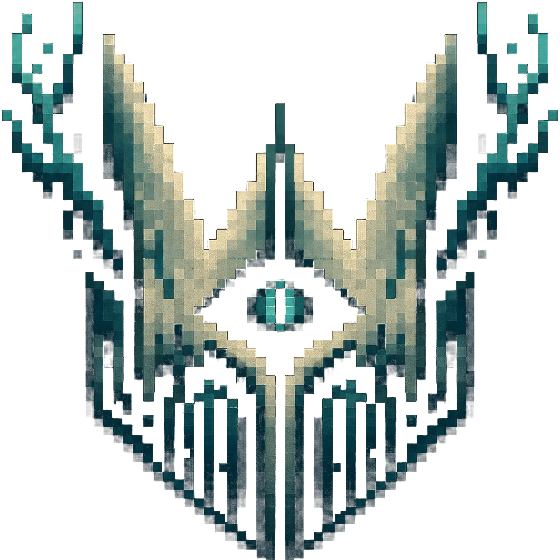
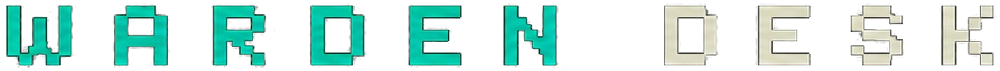

Eight agents. Seven of them hunt for a reason to buy. The eighth exists only to refuse, and it outranks the other seven.
open source · apache 2.0 · no keys · no wallet · never executes a trade
no trade log, by design - the desk holds no keys and signs nothing. what it logs is refusals.
The desk disagrees with itself on purpose: GRAVEYARD wants a corpse, WARDEN wants a live book.
Every line is one candidate the desk built off the live launchpad feed and then judged: the rule
that fired, the sentence it fired with, and the contract address, so the coin can be looked up
later and the rule argued with. Refusals are appended to data/refusals.jsonl.
A run pulls the newest mints off pump.fun, groups them by ticker, looks up the oldest coin ever minted under each name and hands it to WARDEN. The clock in the header is that run's timestamp, not your page load - when the desk stops running, the page says so instead of pretending. One verdict per ticker per 24 hours, the cooldown the rulebook already gives WARDEN, so these are new names rather than the same ones judged again.
Every run reads about a thousand fresh mints, the last forty minutes of the launchpad, and every number on this page comes off that feed or off the chain. Nothing is typed in by hand.
Every trading bot anyone publishes is an optimist. It scans, it enters, it shows a green candle. Nobody posts the trade their bot refused, for a boring reason: a refusal has no chart. There is nothing to screenshot.
That half is where the money was going. So this desk writes down the other side - every refusal, with the contract attached - and in a month anyone can check what those coins did and tell me the rules were wrong.
Seven rules, seven agents, one threshold file. Nothing
in the code hard-codes a number - every agent reads rules.json, so all seven can be
read, diffed and argued with in one screen.
| launches in the bundled snapshot | - |
| distinct names in it | - |
| deployer wallets | - |
| days of feed it covers | - |
| launches pulled live, last run | - |
| clone waves found in them | - |
| refusals written down so far | - |
| thresholds, all in one file | 7 |
Public on-chain facts only. No key was used to build any of it, and the desk runs on a fresh clone with no network access beyond that snapshot.
Unknown is a no. On a fresh clone the desk cannot read holder counts without an indexed RPC, and it does not shrug and pass - it refuses.
The agent that finds coins is cheap.
The one that refuses them is the product.